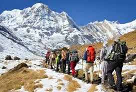
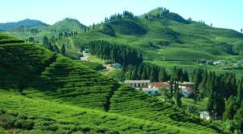
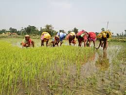
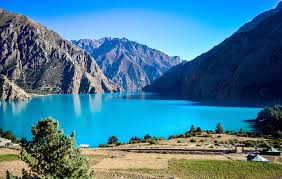
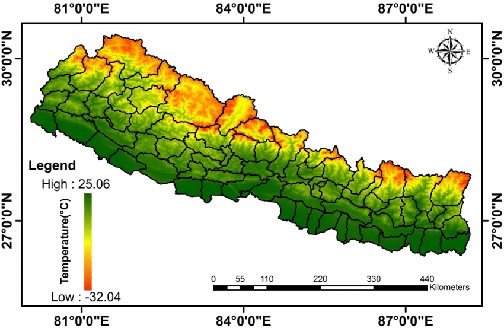

The Himalayan Region
Overview: Nepal is home to some of the highest peaks in the world, including Mount Everest, the highest point on Earth. The Himalayan range dominates the northern part of the country, offering breathtaking views and drawing adventurers from across the globe. Key Peaks: Highlight major peaks like Mount Everest, Kanchenjunga, and Annapurna. Trekking and Adventure: Describe popular trekking routes such as the Everest Base Camp, Annapurna Circuit, and Manaslu Trek. Cultural Significance: Discuss how the Himalayas are revered by local communities, particularly in Tibetan Buddhism and Hinduism.
The Hilly Region (Mid-hills)
Overview: The hilly region lies between the high Himalayas and the lowland Terai. It’s characterized by rolling hills, lush valleys, and terraced farming. Scenic Spots: Mention famous destinations like Pokhara, with its beautiful lakes and views of the Annapurna range, and Nagarkot, known for sunrise views over the Himalayas. Agriculture: Explain how terraced farming in this region sustains local communities and produces crops like rice, maize, and wheat. Cultural Diversity: Highlight the rich cultural diversity of ethnic groups like the Gurung, Newar, and Magar communities, with unique festivals and traditions.
The Terai Region
Overview: The southern plains, known as the Terai, stretch along the Indian border and are home to fertile agricultural lands, dense jungles, and diverse wildlife. Wildlife and National Parks: Describe Chitwan National Park and Bardia National Park, famous for their populations of Bengal tigers, rhinos, and elephants. Agriculture and Economy: Explain how this region is the breadbasket of Nepal, producing grains, fruits, and sugarcane. Cultural Influence: Discuss the influence of Indian culture in this region, seen in its food, clothing, and festivals.
Rivers and Lakes
Rivers: Nepal is crisscrossed by rivers like the Koshi, Gandaki, and Karnali, which are vital for agriculture, hydropower, and rafting adventures. Lakes: Highlight important lakes such as Rara Lake, the largest in Nepal, and Phewa Lake in Pokhara, a major tourist attraction. Hydropower Potential: Nepal’s rivers are a key resource for hydropower, which is being developed to meet the country’s energy needs.
Climate and Ecosystems
Climate Zones: Nepal experiences a wide range of climates, from the icy cold of the Himalayas to the subtropical heat of the Terai. Biodiversity: Due to its diverse geography, Nepal hosts a range of ecosystems, supporting a variety of flora and fauna from alpine meadows to dense jungles. Environmental Challenges: Address issues like climate change, deforestation, and the melting of glaciers in the Himalayas.
